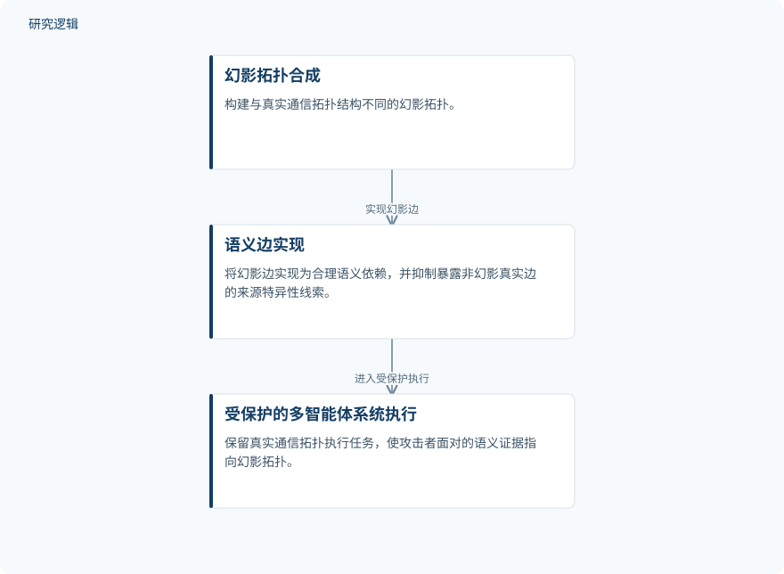

摘要解读
通过幻影结构注入隐藏大语言模型多智能体通信拓扑
Concealing LLM-Based Multi-Agent Topology via Phantom Structure Injection
解读更新 2026-11-10 17:58 · 依据公开摘要整理，未核验全文细节
多智能体系统即使不公开内部连接，也可能通过可观察的推理轨迹泄露通信拓扑。MIRAGE尝试保留真实协作结构，同时让攻击者看到指向“幻影拓扑”的语义证据，探索架构保密与任务效用能否兼顾。
文章目录
推理轨迹为什么会暴露通信结构
在大语言模型多智能体系统中，通信拓扑决定信息如何在智能体之间流动，也往往承载系统架构的专有知识。摘要指出，已有工作能够在黑盒条件下，利用可观察推理轨迹中的语义依赖推断这些连接，带来知识产权泄露与系统弱点暴露的风险。
这里需要隐藏的是可观察推理轨迹中可能暴露真实通信拓扑的语义依赖线索。因此，研究关注的不只是内部结构是否公开，还包括系统运行时呈现的语义证据是否让真实连接变得可推断。
保留真实通信，塑造幻影语义依赖
MIRAGE的核心是区分任务执行所用的真实拓扑与攻击者面对的语义证据。真实通信拓扑继续服务于任务执行，而对外可观察的语义证据被塑造成指向一个经过构造的幻影拓扑。
摘要明确给出三个阶段：幻影拓扑合成、语义边实现、受保护的多智能体系统执行。框架构建与真实结构不同的幻影拓扑，将幻影边实现为合理的语义依赖，同时抑制可能暴露真实连接的来源特异性线索；这些真实连接存在于真实拓扑中，却不在幻影拓扑中。
依据摘要整理的MIRAGE研究过程示意


概括摘要明确给出的三个阶段及其关系，并非论文原图，不表示未报告的实现配置。
下载 SVG图示关系说明
实线表示相邻阶段的信息流，虚线表示跨阶段联系或反馈。
幻影拓扑合成 → 语义边实现：实现幻影边；语义边实现 → 受保护的多智能体系统执行：进入受保护执行
摘要报告攻击受抑制，任务效用大体保留
作者报告，在三个拓扑优化框架和四个基准数据集上的实验中，MIRAGE显著降低了拓扑推断攻击的有效性，同时大体保留了受保护系统的任务效用。这里的结果是摘要给出的定性结论，不能据此解读为完全阻止推断，或任务表现毫无损失。
效果幅度与适用边界仍需进一步核对
仅凭摘要，无法判断具体样本规模、数据集构成、攻击者能力与比较基线，也无法核对攻击效果下降和任务效用变化的数值、波动及验证范围。摘要未说明语义边如何具体实现，亦未提供运行开销信息；这些是当前材料无法回答的问题，不代表论文没有开展相关分析。
阅读启发：把可观察推理纳入保密边界
阅读启发：对大模型多智能体应用，架构保密值得同时关注内部连接和可观察推理中的语义依赖。后续阅读可重点核对：幻影依赖如何保持合理、真实来源线索如何受到抑制，以及攻击受抑制与任务效用保留分别由哪些指标支持。当前摘要不足以判断其在智能运维等具体场景中的适用性。
以上为本站阅读启发与建议，不是论文已验证的结论。